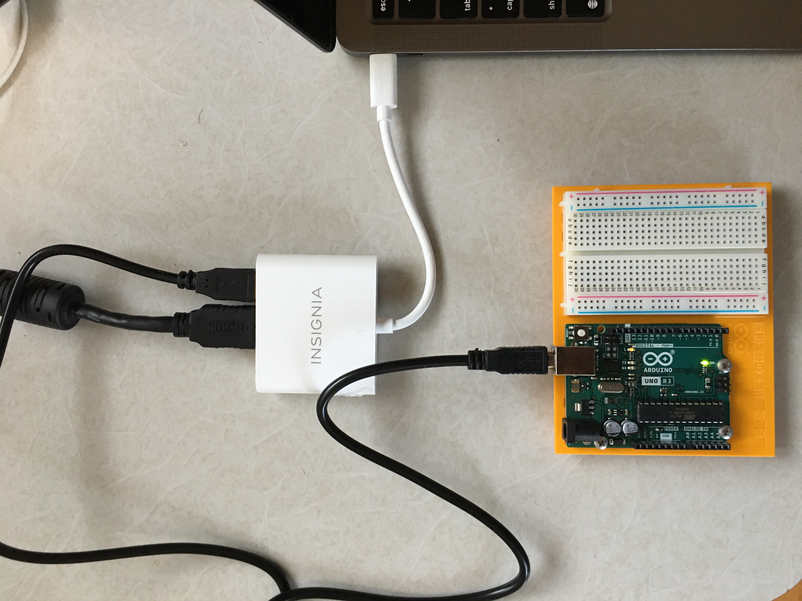
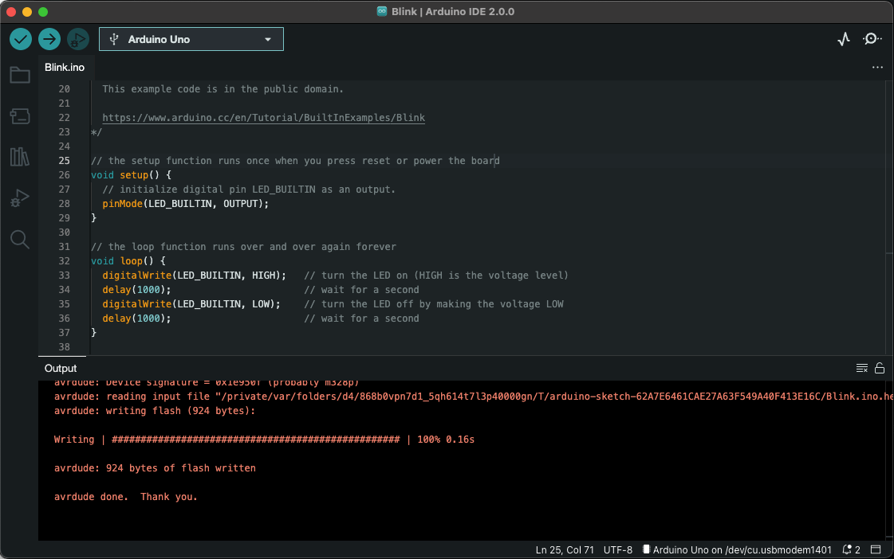

Arduino
The first day is the hardest day!
I started my intro to Arduino with the Starter Kit, on a MacBook Air M1. I followed the instructions on the book (an amazing book!) and downloaded the Arduino IDE version 2.0.0. Currently, there is no native support for the ARM architecture on Mac M1, but the IDE works well under Rosseta2. The Arduino UNO comes with a USB A to USB B cable to connect to your computer. The MacBook Air M1 comes with only two ports, USB C. I already had a multiport adapter, so I used it. This was my initial configuration:
The test program was Blink, I executed it on the Arduino IDE but I got this error: avrdude: stk500_recv(): programmer is not responding. I did a little troubleshooting but got the same error. Finally, I found a common solution: an original cable. So I bought one and yes! This time the program Blink worked!
I had some trouble with the hardware: cables and other components; they are so small and difficult to put on the board. I hope to improve my manual skills.
Update!
Yesterday, before I tried the original cable, I restarted the machine. Today I test the flash written with the multiport adapter again, and worked well! Seems like the fix was only a restart :(